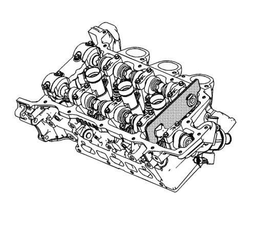
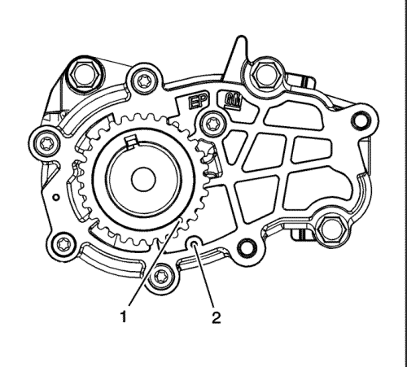
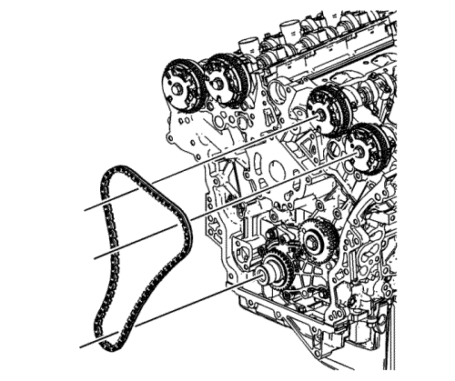
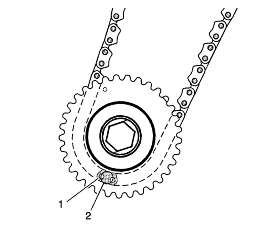
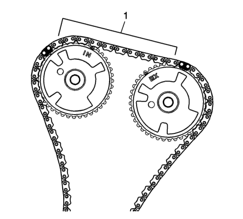
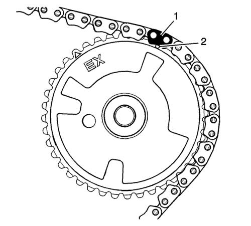
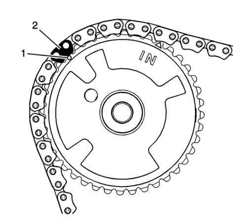

Nota: No debería haber necesidad de girar el árbol de levas más de 10 grados. Usando el hexágono de fundición en el árbol de levas, gire el árbol de levas para montar las herramientas EN 48383.
- Monte la herramienta EN 48383-1 en la parte trasera de los árboles de levas de la izquierda.
Nota: Todos los árboles de levas deben asegurarse en su sitio antes de proceder a montar cualquier cadena de accionamiento de árbol de levas.
- Asegúrese de que la herramienta 48383-1 queda bien acoplada sobre los árboles de levas.

- Usando el casquillo EN 48589, asegúrese de que el cigüeñal esté en la posición de distribución de fase uno, con la marca de distribución (1) del piñón del cigüeñal alineada con la marca de distribución de fase uno de la tapa de la bomba de aceite (2). Consultar Diagrama de alineación de la cadena de distribución .

- Monte la cadena de accionamiento secundaria izquierda de árbol de levas.

- Coloque la cadena de accionamiento secundaria izquierda de árbol de levas alrededor del piñón interior del piñón loco de la cadena de accionamiento intermedia izquierda de árbol de levas con el eslabón (1) de la cadena de accionamiento de árbol de levas de distribución alineado con el orificio (2) de acceso de alineación efectuado en el piñón loco exterior de la cadena de accionamiento intermedia izquierda de árbol de levas.

- Envuelva la cadena de accionamiento secundaria de árbol de levas alrededor de los dos piñones de accionamiento de actuador de la parte izquierda.
- Asegúrese de que haya 10 eslabones (1) entre los eslabones de la cadena de accionamiento de árbol de levas de distribución para los piñones de actuador de posición de árbol de levas.

- Alinee la marca circular (2) de alineación del piñón del actuador de posición del árbol de levas de escape izquierdo con el eslabón (1) de la cadena de accionamiento de árbol de levas de distribución.

- Alinee la marca circular (1) de alineación del piñón del actuador de posición del árbol de levas de admisión izquierdo con el eslabón (2) de la cadena de accionamiento de árbol de levas de distribución.